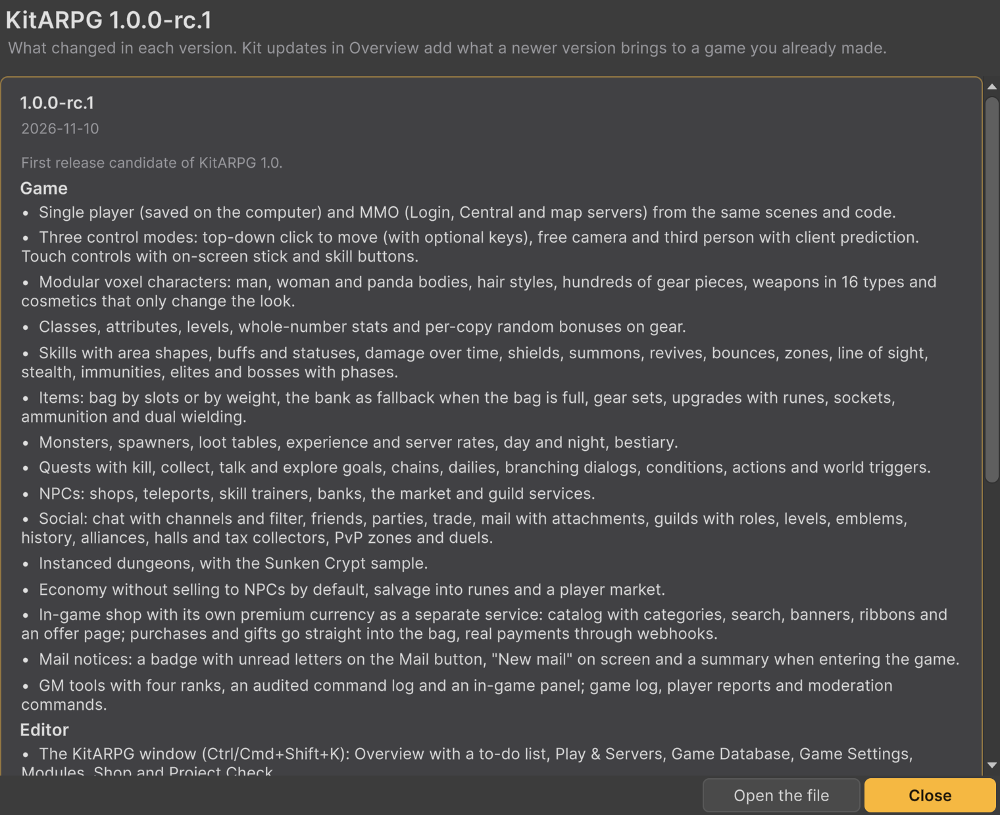

Referencia
Registro de cambios
Cada versión de KitARPG, la más nueva primero. La versión que tienes está en la ventana KitARPG, bajo Overview. Actualizar conserva tu juego: lee Actualizaciones del kit en la guía antes de importar una versión nueva.

[1.0.0] - 2026-11-10
Primera versión de KitARPG.
Juego
- Un jugador (guardado en la computadora) y MMO (Login, Central y servidores de mapa) desde las mismas escenas y el mismo código.
- Tres modos de control: top-down con clic para moverse (con teclas opcionales), cámara libre y tercera persona con predicción en el cliente. Controles táctiles con stick y botones de skill en pantalla.
- Personajes voxel modulares: cuerpos de hombre, de mujer y de panda, peinados, cientos de piezas de equipo, armas en 16 tipos y cosméticos que solo cambian el aspecto.
- Clases, atributos, niveles, stats en números enteros y bonificaciones aleatorias por copia en el equipo.
- Skills con formas de área, buffs y estados, daño en el tiempo, escudos, invocaciones, revivir, rebotes, zonas, línea de visión, sigilo, inmunidades, élites y jefes con fases.
- Ítems: bolsa por casillas o por peso, el banco como respaldo cuando la bolsa está llena, sets de equipo, mejoras con runas, engarces, munición y dos armas.
- Monstruos, spawners, tablas de botín, experiencia y tasas del servidor, día y noche, bestiario.
- Misiones con objetivos de matar, recoger, hablar y explorar, cadenas, diarias, diálogos con ramas, condiciones, acciones y disparadores del mundo.
- NPCs: tiendas, teletransportes, maestros de skills, bancos, el mercado y servicios de gremio.
- Social: chat con canales y filtro, amigos, grupos, intercambio, correo con adjuntos, gremios con roles, niveles, emblemas, historial, alianzas, casas y recaudadores, zonas PvP y duelos.
- Mazmorras instanciadas, con la muestra Sunken Crypt.
- Economía sin venta a NPCs por defecto, rotura en runas y un mercado entre jugadores.
- Tienda del juego con su propia moneda premium como servicio aparte: catálogo con categorías, búsqueda, banners, cintas y una página por oferta; las compras y los regalos van directo a la bolsa, pagos reales mediante webhooks.
- Avisos de correo: una insignia con las cartas sin leer en el botón Mail, "New mail" en pantalla y un resumen al entrar al juego.
- Herramientas de GM con cuatro rangos, un registro de comandos auditado y un panel en el juego; registro del juego, reportes de jugadores y comandos de moderación.
Editor
- La ventana KitARPG (Ctrl/Cmd+Shift+K): Overview con una lista de pendientes, Play & Servers, Game Database, Game Settings, Modules, Shop y Project Check.
- Setup Wizard en dos pasos que configura URP, las fuentes, la muestra y las escenas, y luego abre Title y la ventana KitARPG.
- Asistentes paso a paso para modelos de jugador nuevos y monstruos nuevos.
- Project Check antes de cada build, separación de builds entre código de cliente, de servidor y de pruebas.
- Actualizaciones del kit: las versiones nuevas agregan lo que le falta a un juego hecho con una más vieja, sin tocar lo que se cambió a mano.
- Se usa el Input System nuevo cuando el proyecto lo tiene prendido, si no el Input Manager. El Setup Wizard y Project Check ponen las escenas al día.
Servicios
- Login, Central y Shop en .NET 10 con PostgreSQL en producción y SQLite en una sola computadora.
- Lanzador que inicia todo con un clic, o sin pantalla desde el editor.
- Docker Compose con Caddy para TLS, builds de servidor de mapa para Linux.
- Un solo dueño para cada copia de ítem, movimientos dentro de transacciones, tickets de mapa de un solo uso, una sesión por cuenta.
DevKit
- Tu código va en tus propios ensamblados creados desde Create > KitARPG > Scripts; el kit nunca se edita.
- Plantillas: efecto de skill, efecto de ítem, condición, acción de juego, objetivo de misión, opción de NPC, sistema del jugador, mensaje de red, comando de GM, oyente del registro del juego, fórmula de combate, fórmula de stats, datos del jugador guardados, reemplazo de un sistema del jugador, línea del menú de ítems, línea del menú del jugador, opción de ajustes, revisión del validador, página de la ventana KitARPG y actualización del kit.
- Eventos estáticos para el servidor y el cliente, métodos virtuales en ventanas, sistemas del jugador, monstruos y NPCs.
- Tus propios datos guardados por personaje, tus propios mensajes a Central y módulos para Login y Central.
- Ejemplo de tablón de recompensas hecho sin tocar el kit, en Unity y en Central.
- Referencia de la API para cada tipo público.
Páginas relacionadas
- Actualizar el kit: cómo importar una versión más nueva y aplicar sus actualizaciones del kit.
- Funciones